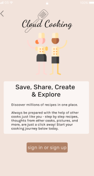
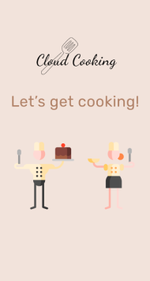
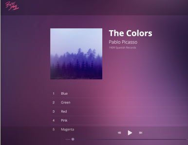
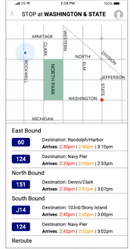
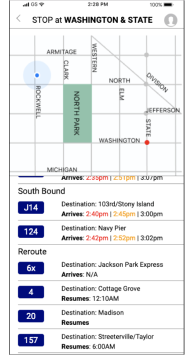

Jess Kaspar
Hi! My name is Jess and I am a UX Designer based in Chicago. With a bachelor’s degree in English, and recent experience in UX Design through the Bloc designer track, I am able to use my knowledge in both to thrive in UX Research and UX Design.
Cloud Cooking


A responsive prototype application that allows the user to share, save, create, and explore recipes following Bloc’s project guidelines. Prototype created using Figma, InVision and Usability Hub.
Bloc Jams

A responsive website that allows the user to play music from a select “album” following Bloc’s project guidelines. Website created using HTML, CSS, and JavaScript.
Busy Bus


A responsive screen for an application that shows a user the map and the stops for a bus route, following Bloc’s project quidelines. Prototype created using Figma, HTML, and CSS.